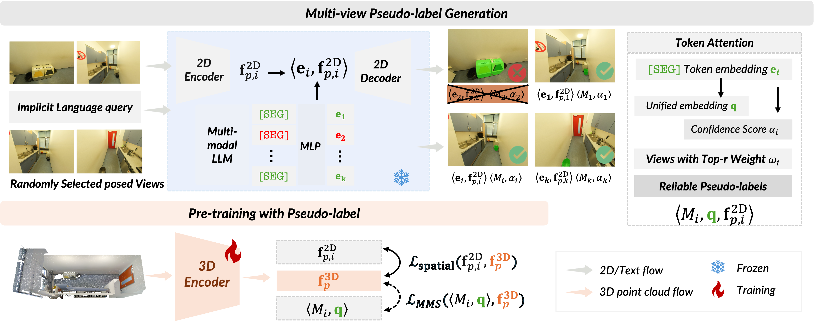

1MBZUAI 2AI2Robotics 3University of Sydney 4Texas A&M University 5University of Melbourne
*Equal contribution †Corresponding authors
*共同一作 †通讯作者

Reasoning segmentation aims to segment target objects based on human intent and spatial reasoning. While 2D MLLMs excel at image-level reasoning segmentation, adapting these capabilities to 3D remains underexplored. We introduce MLLM-For3D, which transfers 2D MLLM knowledge to 3D scenes by generating multi-view pseudo-masks, unprojecting them into 3D, and aligning with text embeddings. To handle cross-view hallucinations and inconsistencies, we introduce a spatial consistency strategy and a Token-for-Query alignment mechanism. Without any 3D labels, MLLM-For3D outperforms existing methods by ~55% mIoU on challenging 3D reasoning segmentation benchmarks.
推理分割旨在基于人类意图和空间推理对目标对象进行分割。虽然2D多模态大语言模型在图像级推理分割上表现出色，但将这些能力迁移到3D场景的研究仍然不足。我们提出MLLM-For3D，通过生成多视角伪掩码、反投影至3D空间并与文本嵌入对齐，将2D MLLM的知识迁移到3D场景理解。为解决跨视角幻觉和不一致性问题，我们引入了空间一致性策略和Token-for-Query对齐机制。在不使用任何3D标注的情况下，MLLM-For3D在具有挑战性的3D推理分割基准上超越现有方法约55% mIoU。
MLLM-For3D bridges the gap between powerful 2D reasoning models and 3D scene understanding through a four-stage pipeline:
MLLM-For3D 通过四阶段流水线，弥合了强大的2D推理模型与3D场景理解之间的鸿沟：
A frozen 2D MLLM (LISA/LISA++) processes each rendered view with the text query, producing per-view segmentation masks and [SEG] token embeddings.
冻结的2D MLLM（LISA/LISA++）对每个渲染视角配合文本查询，生成逐视角分割掩码和[SEG] Token嵌入。
Unreliable views with hallucinated objects are filtered by analyzing [SEG] token attention scores, retaining only top-r confident views.
通过分析[SEG] Token的注意力分数过滤包含幻觉对象的不可靠视角，仅保留置信度最高的top-r个视角。
Reliable 2D masks are unprojected into 3D point space. An attention-based fusion module weights each view's contribution by reliability and semantic similarity.
将可靠的2D掩码反投影至3D点空间，通过基于注意力的融合模块按可靠性和语义相似度加权每个视角的贡献。
A unified query embedding derived from [SEG] tokens across views enables consistent identification of the same 3D object across all viewpoints.
从跨视角的[SEG] Token中提取统一查询嵌入，确保在所有视角中对同一3D对象的一致识别。
| Method | 3D Labels | cIoU | gIoU | Acc@0.25 | Acc@0.50 |
|---|---|---|---|---|---|
| CLIP2Scene | ✗ | 5.7 | 11.2 | — | — |
| OpenScene | ✗ | 6.8 | 12.5 | — | — |
| Reason3D | ✓ | 19.0 | 22.3 | 25.0 | 15.0 |
| MLLM-For3D (Ours) | ✗ | 36.2 | 38.5 | 47.5 | 32.5 |
| Method | Acc@0.25 | Acc@0.50 |
|---|---|---|
| ScanRefer | 9.8 | 5.1 |
| EDA | 12.5 | 6.3 |
| Reason3D | 24.3 | 14.8 |
| MLLM-For3D (Ours) | 38.7 | 28.4 |
See the paper for full results, ablation studies, and qualitative visualizations. 完整实验结果、消融研究和定性可视化请参阅论文。
Also accepted at NeurIPS 2025. 200k+ vision-language pairs · 900+ scenes · 89k+ human-annotated spatial queries.
A large-scale benchmark for spatial reasoning in complex 3D environments.
同样被 NeurIPS 2025 接收。20万+视觉-语言对 · 900+场景 · 8.9万+人工标注空间查询。
面向复杂3D环境空间推理的大规模基准。
Paper ·
Code ·
HuggingFace
This project builds upon CLIP2Scene, LISA, and MinkowskiEngine. We thank the authors for open-sourcing their work. The project page template is adapted from Nerfies. 本工作基于 CLIP2Scene、LISA 和 MinkowskiEngine 构建。感谢原作者开源代码。页面模板改编自 Nerfies。